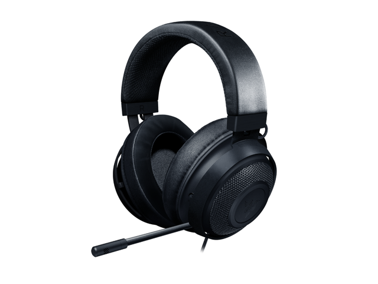
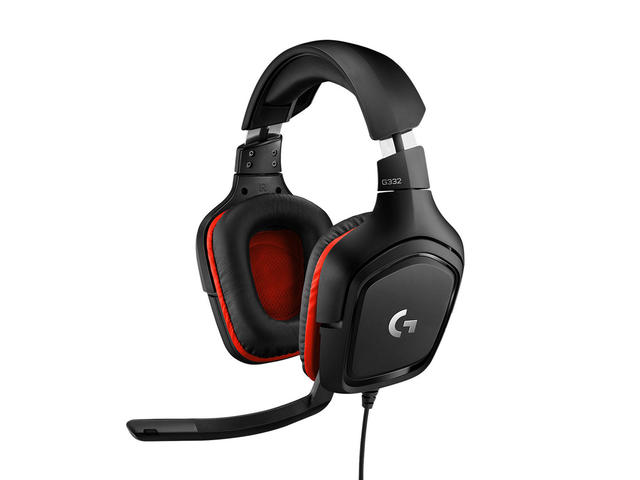
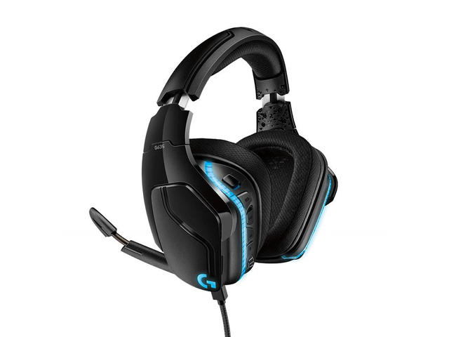
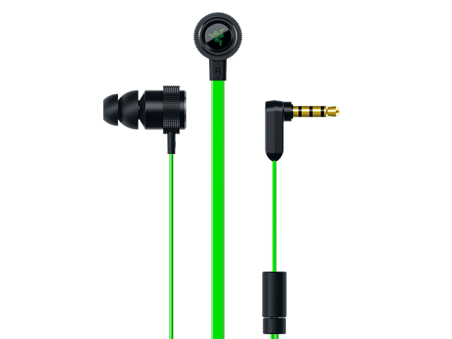
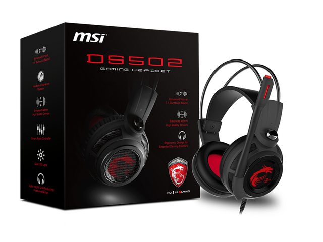
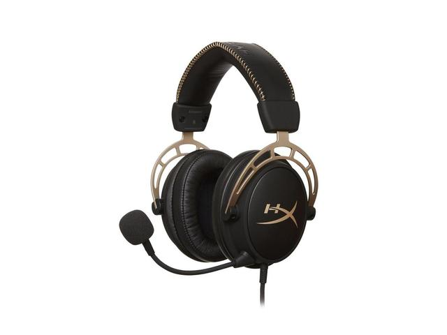
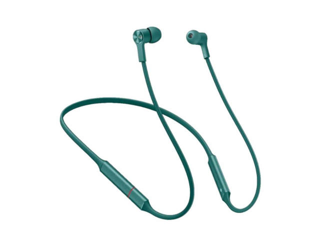

Razer Kraken 2019
Sound Built for Gaming: Outfitted with custom-tuned 50 mm drivers
All-Day Comfort: Oval, cooling gel-infused cushions with indents for glasses prevent overheating and pressure build-up
Retractable Noise Cancelling Microphone: An improved cardioid mic reduces background and ambient noises for crystal-clear communication
In-Line Audio Controls: Includes an analog volume control wheel and mic mute switch
Lightweight & Durable: Made of bauxite aluminum, the Kraken frame is flexible and designed to last
More Info

Logitech G332
Large 50 millimeter audio drivers produce great sound for a more immersive gaming experience
6 millimeter flip to mute mic with volume control at your fingertips
One high quality headset for all your devices; Connects to PC, mobile devices and game consoles via simple 3.5 millimeter cable
Slim and lightweight with premium leatherette earpads and rotating ear cups for greater comfort during long gaming sessions
More Info

Logitech G635
Premium wired Gaming headphones enhanced with the latest advanced technology from Logitech G
Large 50 millimeter Pro-G drivers lets you hear more of the game environment in greater detail
Lightsync RGB game-driven lighting, EQ settings and more can be customized through downloadable Logitech G hub software
Advanced DTS Headphone: X 2. 0 surround Sound fully immerses you in both subtle and explosive Parts of a precise positional 3D soundscape
Enhanced 6 millimeter mic-provides new levels of comms clarity
More Info

Razer Hammerhead V2
10 mm extra-large dynamic drivers for stellar audio fidelity
All-new body design with flat-style cables for toughness on the go
In-line microphone with 3 Quick Action Control buttons for iOS and Android devices
More Info

MSI DS502
Two Enhanced 40mm drivers for quality audio
Improved noise reduction
Xear Living technology: enhanced virtual 7.1 surround sound
7.1 Virtual speaker shifter
Environment reverb
Ergonomic design: extra lightweight and self-adjusting headband
10-Band Equalizer
Xear SingFx
More Info

Kingston HyperX Cloud Alpha Gold Limited
HyperX Dual Chamber Drivers for more distinction and less distortion
Signature Award Winning HyperX comfort
Durable aluminum frame with expanded headband
Detachable braided cable with convenient in line audio control
Detachable noise cancellation microphone
More Info

Huawei CM70-C, Green
Noise reduction while making calls
Up to 18 hours of music playback
Super fast charging in just 70 minutes
Ultra light and comfortable to wear
More Info

Philips UpBeat SHB2515BK
Up to 3+70 hours of play time with multiple charges from the charging case
Enjoy quality sound - passive noise isolation for better sound at lower volume. Neodymium speaker drivers deliver pure balanced sound. Compact and efficient 6mm speaker drivers
Brings convenience to your lifestyle - Auto on/off and auto pairing, Bluetooth V5. 0 wireless technology
Charging case's built-in 3350mAh power bank charges your headphones as well as your mobile devices
Quickly charge your earbuds in only 1. 5 hours and enjoy up to 5 hours of play time or Talk time
More Info